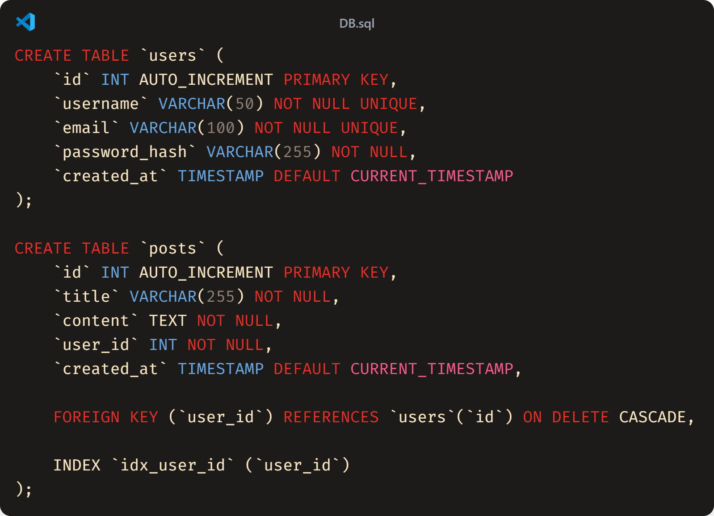

Halo, para pejuang kode!
Sebagai mahasiswa informatika, kita pasti sering mendengar istilah "database". Tapi, di balik layar pembuatan database yang andal, ada sebuah proses desain yang krusial, salah satunya adalah pembuatan Physical Model atau Model Fisik. Pernahkah kamu berpikir bagaimana data di aplikasi raksasa seperti Instagram atau Gojek bisa diakses begitu cepat dan tetap terorganisir? Jawabannya ada pada desain databasenya yang matang, dan Physical Model adalah cetak biru terakhir sebelum database itu benar-benar "dibangun".
Yuk, kita bedah tuntas apa itu Physical Model!
Memahami Tiga Level Model Data
Sebelum menyelam ke Physical Model, penting untuk tahu posisinya dalam hierarki desain database. Umumnya, ada tiga level:
- Conceptual Model (Model Konseptual): Ini adalah level paling abstrak. Ibarat sketsa ide di atas serbet. Kita hanya mendefinisikan entitas-entitas utama dan hubungan antar mereka. Contoh: "Seorang
Userdapat membuat banyakPost." - Logical Model (Model Logis): Ini lebih detail dari konseptual. Di sini kita mendefinisikan atribut (kolom) untuk setiap entitas, serta primary key dan foreign key untuk membangun relasi. Namun, model ini masih independen dari teknologi database spesifik (DBMS) yang akan digunakan.
- Physical Model (Model Fisik): Nah, ini adalah level paling detail dan konkret. Model ini menerjemahkan Logical Model ke dalam implementasi teknis untuk sistem manajemen database (DBMS) tertentu, seperti MySQL, PostgreSQL, atau SQL Server.
Physical Model adalah representasi skema database yang menunjukkan bagaimana data akan disimpan secara fisik di dalam sebuah DBMS. Model ini sangat spesifik dan teknis. Jika Logical Model adalah tentang "apa" (data apa yang disimpan), maka Physical Model adalah tentang "bagaimana" (bagaimana data itu akan disimpan secara efisien).
Di sinilah semua keputusan teknis dibuat, dari penamaan tabel hingga optimasi performa.
Komponen Utama Physical Model
Physical Model mengubah struktur dari Logical Model menjadi elemen-elemen yang bisa dieksekusi oleh DBMS. Berikut adalah komponen utamanya:
- Nama Tabel dan Kolom: Nama yang akan benar-benar digunakan dalam kode SQL, sering kali mengikuti konvensi penamaan tertentu (misalnya,
snake_caseataucamelCase). - Tipe Data Spesifik: Setiap kolom harus didefinisikan dengan tipe data yang paling efisien sesuai DBMS-nya. Contoh:
VARCHAR(255)untuk teks,INTuntuk bilangan bulat,TIMESTAMPuntuk waktu di MySQL. - Primary Key (PK) & Foreign Key (FK): Mendefinisikan kolom mana yang menjadi kunci utama dan kunci asing untuk menjaga integritas relasi antar tabel.
- Indeks (Indexes): Ini adalah komponen krusial untuk performa! Indeks dibuat pada kolom yang sering digunakan dalam pencarian (klausa
WHERE) untuk mempercepat proses query. - Batasan (Constraints): Aturan-aturan yang diterapkan pada data, seperti
NOT NULL(tidak boleh kosong),UNIQUE(harus unik), atauDEFAULT (nilai bawaan). - Partisi Tabel, Trigger, dan Prosedur Tersimpan: Fitur-fitur spesifik DBMS lainnya yang digunakan untuk manajemen data dan performa.
Sama seperti kontraktor yang butuh spesifikasi teknis, seorang Database Administrator (DBA) atau developer butuh Physical Model untuk menulis kode CREATE TABLE.
Contoh Praktis: Database Blog Sederhana
Bayangkan kita ingin membuat database untuk blog sederhana dengan Logical Model sebagai berikut:
- Tabel
users(id, username, email, password) - Tabel
posts(id, title, content, user_id)
Saat kita mengubahnya menjadi Physical Model untuk MySQL, hasilnya akan terlihat seperti kode SQL berikut:
 Gambar di atas merupakan contoh penerapan Physical Model untuk MySQLLihat perbedaannya? Physical Model di atas sangat detail:
- Menggunakan tipe data spesifik MySQL (
INT, VARCHAR, TEXT, TIMESTAMP). - Menambahkan
AUTO_INCREMENTpadaid. - Memberi batasan
NOT NULLdanUNIQUE. - Menentukan relasi
FOREIGN KEYdengan aksiON DELETE CASCADE(jika user dihapus, semua post-nya ikut terhapus). - Membuat
INDEXpadauser_iduntuk optimasi.
Physical Model adalah jembatan terakhir antara desain konseptual dan implementasi database yang sesungguhnya. Ini adalah fase di mana teori bertemu dengan praktik, di mana efisiensi, performa, dan integritas data benar-benar dipertaruhkan
Bagi kita sebagai calon software engineer atau database administrator, memahami Physical Model bukan hanya sekadar teori, melainkan sebuah keharusan untuk membangun aplikasi yang skalabel, cepat, dan andal. Jadi, lain kali kamu merancang sebuah sistem, jangan lupakan pentingnya cetak biru terakhir ini!